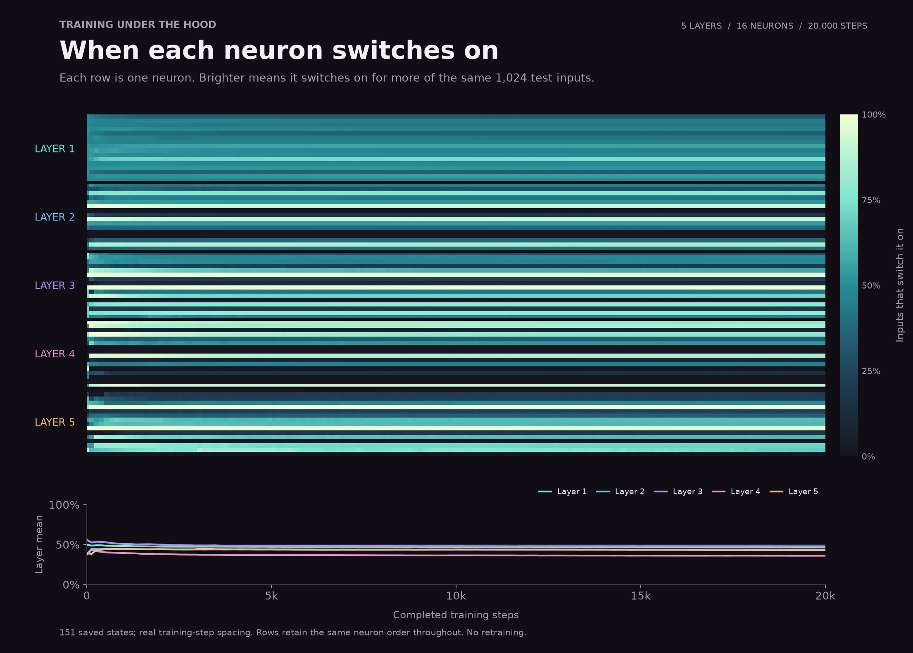
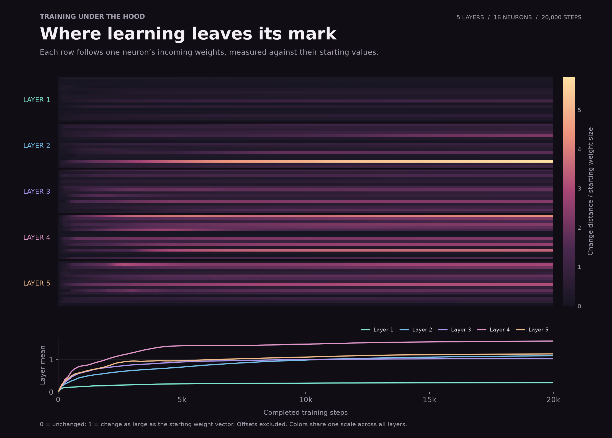
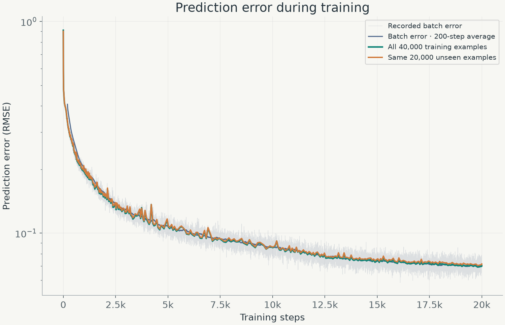
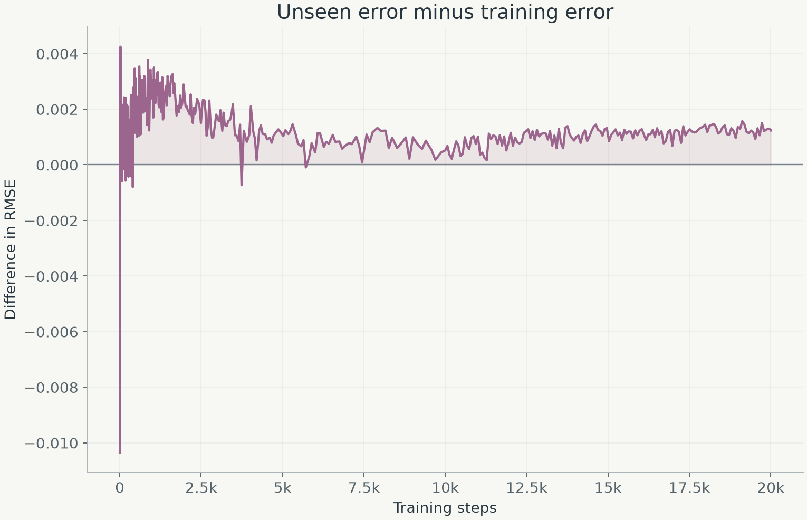
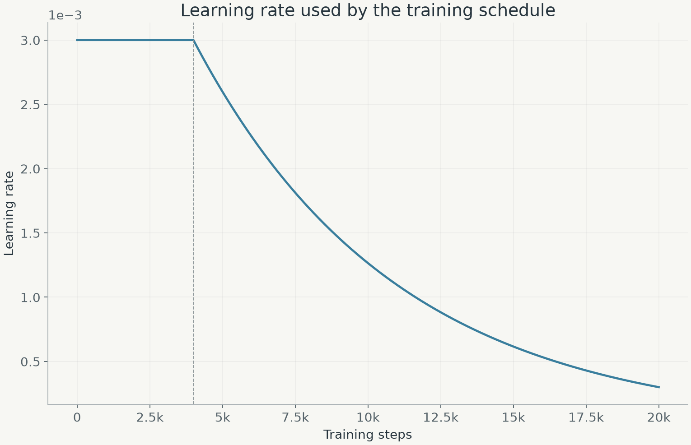
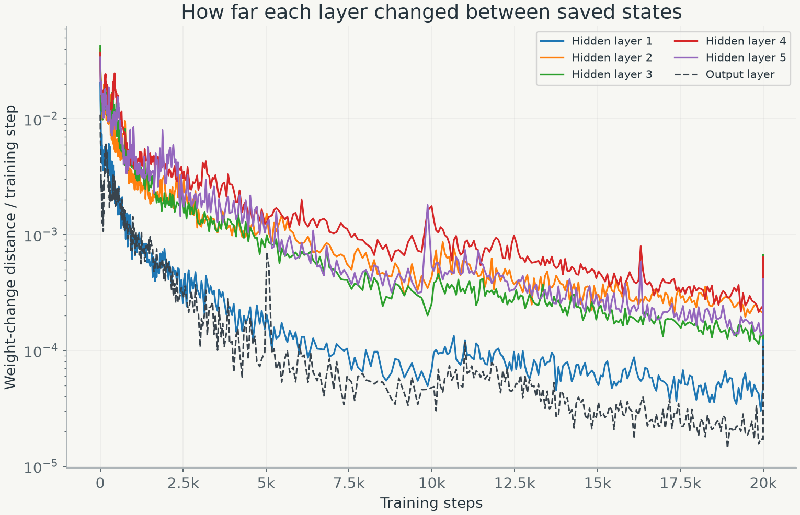
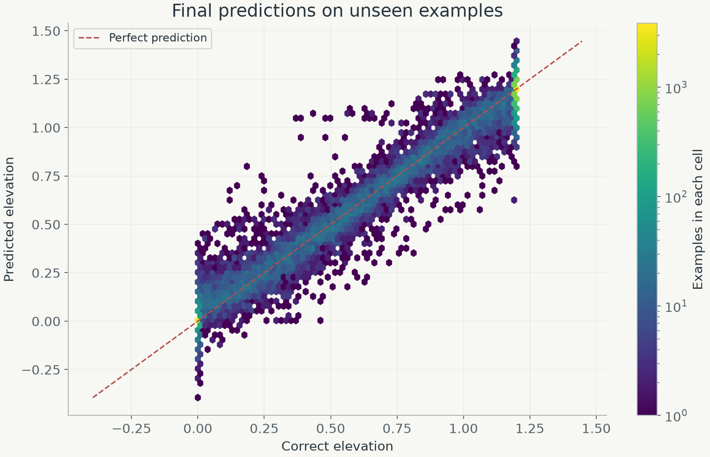
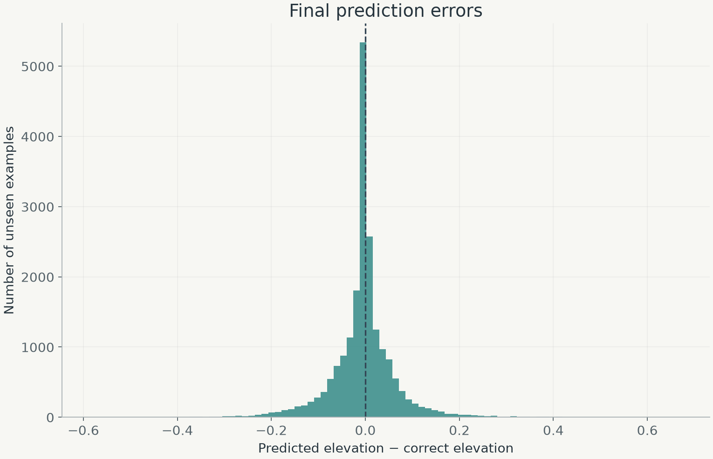
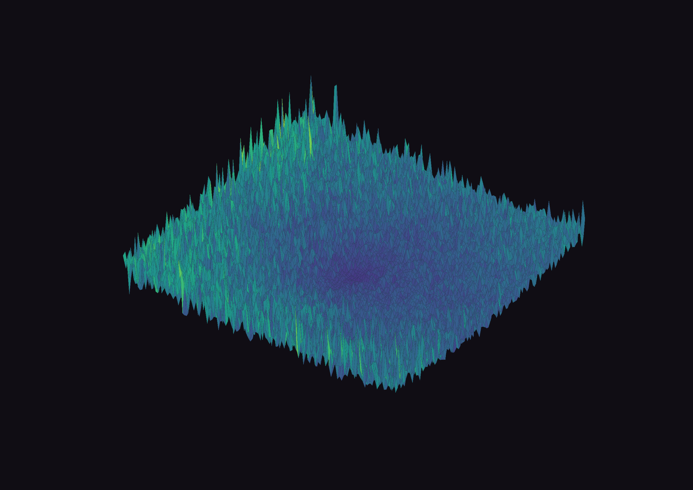

5 layers · width 16
Download 16 visible plots (PNG ZIP)
2 → 16 → 16 → 16 → 16 → 16 → 1 · 20,000 training steps
The current model, trained for 20,000 steps. Image variations below hide fifth-layer lines. The original-color versions spread the palette out to reveal smaller height differences.
- Parameters
- 1,153
- Regions
- 7,097
- Held-out error
- 0.07158
Original interpolation video
Original 48 → 48 → 32 model · 20 seconds forward, 20 seconds backward · 60 FPS
Inside training
How individual neurons and their weights changed as the model learned.

Each row is one neuron. Brighter means it switches on for more of the same 1,024 test inputs. 151 saved states; real training-step spacing. Rows retain the same neuron order throughout. No retraining.
Download PNG


Each row follows one neuron’s incoming weights, measured against their starting values. 0 = unchanged; 1 = change as large as the starting weight vector. Offsets excluded. Colors share one scale across all layers.
Download PNG

A journey through 1,153 weights
Drag to rotate. Hover over the line to see training step and error.
Rotate the actual training path: height is error on the same 20,000 unseen examples at every saved checkpoint; color is training step. Two viewing directions retain 90.3% of saved weight movement. The rest is hidden in this view. Error height uses a logarithmic scale.

Training statistics
Training records and checks on 20,000 examples kept outside training. The held-out curve was calculated from saved checkpoints; no new training was run.

Recorded batch error and its 200-step average, compared with saved-checkpoint error on all training examples and a fixed set of 20,000 unseen examples. Vertical axis uses a logarithmic scale.
Download PNG


Positive values mean the saved network has more error on the fixed unseen examples. The same examples are used at every checkpoint.
Download PNG


Reconstructed from the verified training settings: 0.003 for the first 4,000 steps, then a gradual decrease to 0.0003 at step 20,000. This value was not logged separately.
Download PNG


Straight-line distance between consecutive saved weight and offset values, divided by elapsed steps. This is checkpoint movement, not gradient size or the full distance traveled between checkpoints.
Download PNG


Final network predictions on the same 20,000 unseen examples. The dashed line marks exact agreement; color counts examples in each small cell on a logarithmic scale.
Download PNG


All 20,000 unseen examples. Negative values are predictions that are too low; positive values are predictions that are too high.
Download PNG

Model image variations


Loss landscape
Slightly softened, at 90% of the original wide view.


Light smoothing is applied only to the displayed terrain. The underlying measurements are unchanged. Each surface spot measures error on four different examples; changing those examples creates much of the roughness.